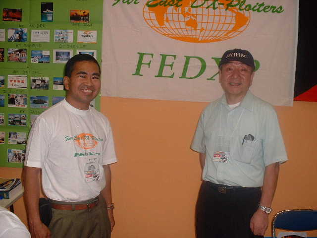
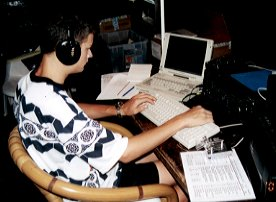

|
Flash ! DX
|
|
|
Flash ! DX
|
[Back Issues Aug.2002]
TIME:UTC(JST-09:00)
Report from JA1RJU (PM95sq)
31.Aug.2002(15:00e)
*BY-TV 01:00- 49.750 --
*VK-TV 05:00- 46.172/240 --
VK4RTL 05:25- 50.087 CW Beacon
VK4JH 05:31 50.110 CW
VK8RAS 06:00- 50.047 CW Beacon
VK4ABP 06:50- 52.347 CW Beacon
VK4RTL 09:00- 50.087 CW Beacon
VK8RAS 09:00- 50.047 CW Beacon
XV9DT 09:44 50.110 CW QSL Direct only SAE+$2
30.Aug.2002(15:00e)
*BY-TV 01:00- 49.750 --
*VK-TV 03:20- 46.172 --
VK4RGG 04:55- 50.058 CW Beacon
VK4RTL 05:15- 50.087 CW Beacon
VK8RAS 05:50- 50.047 CW Beacon
VK4FNQ 06:25 50.110 SSB
VK4RTL 09:00- 50.087 CW Beacon
VK8RAS 09:00- 50.047 CW Beacon
VK4ABP 09:00- 52.347 CW Beacon
29.Aug.2002(15:00d)
*VK-TV 05:00- 46.240 -- weak
*VK-TV 05:30- 46.172 -- strong
*BY-TV 05:30- 49.750 --
*9M-TV 07:30- 48.240/260 --
VK8RAS 09:30- 50.047 CW Beacon
VK4RTL 09:30- 50.087 CW Beacon
VK4FNQ 09:40 50.110/145 SSB
YC1MH 12:33 50.110 SSB
YB0CBI 12:35 50.110 SSB
28.Aug.2002(15:00f)
*BY-TV 00:00- 49.750 --
*ZL-TV 03:10- 45.24/25/26--
*VK-TV 04:00- 46.172 --
*9M-TV 06:00- 48.260 --
VK4FNQ 07:01 50.110/145 SSB
VK8RAS 07:20- 50.047 CW Beacon
VK4RTL 07:20- 50.087 CW Beacon
VK4ABP 07:20- 52.347 CW Beacon
VU2CBU 07:25 50.110 SSB
VK6JQ 07:54 50.110 CW
VU2CBU 08:07 50.110 SSB QTH Mumbai(MK69LE)
VK6JQ 09:13 50.110 CW
VK4FNQ 09:15 50.110/145 SSB
| ◎ 夕方からインドのVU2CBU(Pat)がFBに入感。Mumbai(GL=MK69LE)からQRVしているPatは、 IC-706MK2(100W)にオールバンドのバーチカル(Diamond=CP6)での運用だが、 08:00z過ぎのオープンではRS59で30分ほど強力に入感していた。 |
27.Aug.2002(15:00e)
*BY-TV 00:00- 49.750 --
*ZL-TV 02:20- 45.250/260 --
*VK-TV 04:00- 46.172 --
VK4FNQ 06:39 50.110/130 SSB
VK4RTL 07:10- 50.087 CW Beacon
VK8RAS 07:10- 50.047 CW Beacon
VK4AHN 11:15 50.135 SSB
VK6JQ 11:50 50.110 CW
26.Aug.2002(15:00e)
*VK-TV 03:00- 46.172 --
*BY-TV 04:00- 49.750 --
*9M-TV 04:00- 48.260 --
VK4RTL 08:10- 50.087 CW Beacon
VK8RAS 08:20- 50.047 CW Beacon
VK4ABP 08:30- 52.347 CW Beacon
VK4CXQ 09:13 50.110 CW/SSB
VK4FNQ 09:26 50.110/130 SSB
VK4AHN 11:08 50.135 SSB/CW
VK6JQ 11:40 50.110 CW
25.Aug.2002(15:00c)
日中の"DX Report"はお休みします。
*VK-TV 07:00- 46.172 --
VK4RGG 07:00- 50.058 CW Beacon
VK8MS 12:23 50.110 SSB
VK6JQ 12:24 50.110 CW
24.Aug.2002(15:00b)
"DX Report"はお休みします。
| ◎ ハムフェア初日の土曜日は開場と共に多くのHAMがつめかけた。 JARL創立75周年を記念して、今年の特別記念局は"8N1HAM"のコールサインを使っている。 また、外国局の来場者も"ゲストOP"として運用出来ることになった。 |


23.Aug.2002(15:00e)
*BY-TV 00:00- 49.750 --
*VK-TV 03:00- 46.172/240 -- still weak
*ZL-TV 03:00- 45.24/25/26-- still weak
*VK-TV 03:15- 46.172 -- signal go up
FK8HA 05:01 50.110 SSB calling FK8CA & CQ
VK4RGG 05:15- 50.058 CW Beacon
FK8HA 05:55 50.110 SSB
*VK-TV 08:00- 46.172 --
VK8RAS 08:00- 50.047 CW Beacon
FK8CA 08:29 50.110 CW
VK8RAS 12:00- 50.047 CW Beacon
|
◎ 明日24日(土)から2002ハムフェアが東京有明の東京ビッグサイトで開催される。 1999年から会場を神奈川県の"パシフィコ横浜"に移していたハムフェアは、 今年から再び東京有明に戻り4年ぶりに"東京開催"となる。 今年から開催日程が8/24(土)-25(日)の2日間に短縮されたため、 毎年会場で行なわれる"DXCCのフィルドチェック"も2日間となり混雑が予想されたが、 今年は開催前日の23日(金)に、巣鴨のJARL本部で臨時に行なわれた。 この日の"フィルドチェック"も盛況で、開始時間の午前10時前に30人近い申請者が訪れていた。 今年もARRLからNT1N(AH2U)・Dave Patton氏が来日して受付業務を行なっている。 6mのDXCCの申請に"クレジット"されていないHZ(Saudi Arabia)について尋ねたところ、 現在は"王族"のQSL以外は認めていないのでは...とのこと。 フィルドチエックでは"認められるかどうか"の判断はしないので、HZ(HZ1MD、7Z1SJ)のQSLも"受付だけ"はしてくれる。 |
22.Aug.2002(15:00e)
*BY-TV 00:00- 49.750 --
*VK-TV 03:00- 46.172/240 -- strong
*ZL-TV 03:00- 45.24/25/26-- strong
VK2EDB 03:53 50.110 SSB
VK2OM 03:55 50.120/110 SSB
VK2TQP 03:57 50.110 SSB
ZL3TY 03:57 50.110 CW
VK4RGG 04:00- 50.058 CW Beacon
FK8HA 04:03 50.110 SSB
VK6RPH 04:16- 50.066 CW Beacon
VK6RO 04:19 50.110 CW QRM with FK8HA
VK2TQP 04:25 50.113 SSB
VK4BRG 04:25- 50.077 CW Beacon
VK2DN 04:30 50.110 SSB/CW
*VK-TV 10:00- 46.172 --
*9M-TV 10:00- 48.240/260 --
VK6JQ 11:30 50.110 CW
21.Aug.2002(15:00d)
*BY-TV 00:00- 49.750 --
VK8RAS 08:00- 50.047 CW Beacon
VK4RTL 08:00- 50.087 CW Beacon
VK4CH 08:25 50.110 SSB
VK4CXQ 09:10 50.100 CW
VK4FNQ 09:38 50.110 SSB
*ZL-TV 10:00- 45.260 --
*VK-TV 10:00- 46.172 --
20.Aug.2002(15:00e)
*BY-TV 01:00- 49.750 --
*VK-TV 05:00- 46.240 -- weak
*ZL-TV 05:00- 45.240/260 -- weak
*VK-TV 06:00- 46.172 --
VK8RAS 07:50- 50.047 CW Beacon
VK4RTL 07:55- 50.087 CW Beacon
VK4ABP 07:55- 52.347 CW Beacon
VK4CXQ 07:58 50.110 CW
VK4FNQ 08:03 50.130/120 SSB
VK4JH 08:28 50.110 SSB
VK8RAS 13:00- 50.047 CW Beacon
VK4RTL 13:00- 50.087 CW Beacon
VK4ABP 13:00- 52.347 CW Beacon
|
◎ 日本に接近して上陸が心配された台風13号も本土手前で大きくターンして北東に向い、
今回は本土への直接の影響はなかった。
関東地方ではこの台風の"吹き返し"の強い風が一日中吹いていたが、お陰で連日続いていた猛暑も一段落。 夕方の強力なVK4'sから、EveningタイプのTEPに変わった夜半まで、VK'sの信号が入感していた。 8月も中旬を過ぎ、期待された"マルチホップ"はその"影"もない。 |
19.Aug.2002(15:00c)
*BY-TV 01:00- 49.750 --
*VK-TV 03:30- 46.172/240 --
18.Aug.2002(15:00c)
*BY-TV 01:00- 49.750 --
*VK-TV 02:00- 46.172 --
*ZL-TV 05:30- 45.250 -- weak
*9M-TV 07:00- 48.240/260 --
17.Aug.2002(15:00d)
*BY-TV 01:00- 49.750 --
*VK-TV 06:00- 46.172 --
16.Aug.2002(15:00d)
*BY-TV 01:00- 49.750 --
*9M-TV 07:20- 48.240/260 --
(XY0TA 03:00 50.097/110 CW JR6)
VK8RAS 09:00- 50.047 CW Beacon
VK4RTL 09:00- 50.087 CW Beacon
VK4JH 09:18 50.110 CW
VK4FNQ 09:25 50.110/130 SSB
VU2RM 09:36 50.113 CW CQ JA7 Aomori/Iwate
|
◎ 夕方にVU2RMが30分ほど良く聞こえていた。"CQ JA7 Aomori/Iwate"に応答していたのはほとんどが1エリア。 ミヤンマー(Myanmar)の首都Yangonでの運用では6mでも良く聞こえていたXY3C & XY5Tは、 その後の主運用地であるNgapaliからは、6mはおろかHF帯でも日中はほとんど信号を聞く事が出来なかった。 8/13日付けの"Myanmar 2002"のWebの情報によると、運用地のNgapaliへの機材運搬が、 飛行機が小型のため遅れたことに加え、現地の激しいモンスーンの強風と降雨のため、 予定していたアンテナの設置が思うように出来なかったためと報告されている。 海岸沿いに建てられた建物に設置されたシャックには、窓の高さまで高波が押し寄せて、 設置したアンテナも押し流してしまい、かなり危険な状態での運用となっていると。 それでも14日にアンテナ建設を予定していた6mは、さっそく沖縄(JS6)からXY0TAの入感がリポートされている。 予定外のアクシデントで日程も遅れ、運用時間は大幅に少なくなっている。 |
15.Aug.2002(15:00d)
*BY-TV 00:00- 49.750 --
*VK-TV 09:30- 46.172 --
VK8RAS 09:30- 50.047 CW Beacon
VK4RTL 09:30- 50.087 CW Beacon
DS5MHE 09:40 50.125 SSB
DS5JQK 09:45 50.145 SSB
VK4FNQ 10:00 50.130 SSB
14.Aug.2002(15:00e)
*VK-TV 03:00- 46.172 --
*BY-TV 05:00- 49.750 --
*VK-TV 05:00- 46.172/240 --
*ZL-TV 05:00- 45.24/25/26--
VK4RTL 06:25- 50.087 CW Beacon
VK8RAS 06:30- 50.047 CW Beacon
VK4FNQ 06:45 50.300 SSTV
VK4ABP 07:00- 52.347 CW Beacon
VK4JH 07:37 50.110 SSB
13.Aug.2002(15:00d)
*BY-TV 01:00- 49.750 --
*VK-TV 01:00- 46.172 --
*VK-TV 04:30- 46.172/240 --
VK8RAS 08:30- 50.047 CW Beacon
VK4RTL 08:30- 50.087 CW Beacon
VK4ABP 08:30- 52.347 CW Beacon
VK4JH 08:40 50.110 CW
VK4APE 08:50 50.160/110 SSB
VK4FNQ 09:30 50.110/130 SSB
| ◎ VKのBeaconが今日も夕方から強力に入感していた。 この中にあって、VKのオープン時に最も入感頻度の多かった50.304MHzのVK6RSX(Dampier=OG89)が、 今シーズンはさっぱり聞こえて来ないので不思議だったのだが、この"真相"がVK6HKからリポートされている。 それによると、VK6RSXのBeacon電源装置が最近、"動物(animal visitor)"に噛まれ複数の回路がショートしてしまい使えなくなったと。 この装置は1,200Km離れたパースまで送られ修理される事になっているが、 本格的なDXシーズンまでに復旧出来るかどうかは不明とのこと。 |
12.Aug.2002(15:00e)
*BY-TV 00:00- 49.750 --
*VK-TV 03:00- 46.172 --
*ZL-TV 03:00- 45.24/25/26--
VK8RAS 06:30- 50.047 CW Beacon
VK4RTL 06:30- 50.087 CW Beacon
VK4ABP 06:30- 52.347 CW Beacon
ZL1VHF 07:15- 50.043 CW Beacon
VK4JH 07:27 50.110 CW
VK4FNQ 07:30 50.110/130 SSB
*9M-TV 08:20- 48.240/260 --
VK8MS 12:34 50.130 SSB
YC1MH 13:33 50.110 SSB
YB0AR 14:01 50.110/130 SSB
| ◎ 久しぶりにVKのコンデションも52MHz帯まで上昇した。 強力な45MHz帯のZL-TVが入感後、ZL1VHFのBeaconも良く聞こえていたが、 今が冬真最中の南半球のアクティビティは良くないのか、QRVしてくる局は居なかった。 |
11.Aug.2002(15:00d)
*BY-TV 00:00- 49.750 --
HL5HSZ 01:41 50.110 SSB
DS5JQK 02:08 50.135 CW/SSB
UA0CQ 09:55 50.110 SSB QSO with VK4FNQ
10.Aug.2002(15:00e)
*BY-TV 00:00- 49.750 --
(8Q7ZZ 05:50 50.110 CW JA7.0)
8Q7ZZ 06:52 50.110 CW JA1.2.7.8.9.0
JT1FDJ 07:20 50.110 SSB QSL via DH5NT
VK4JH 07:36 50.110/115 CW
JT1BJ 08:19 50.110 CW
DS1PEG 08:48 50.110 CW
09.Aug.2002(15:00d)
*BY-TV 00:00- 49.750 --
(8Q7ZZ 08:50 50.110 CW JA1.2.7.8.0)
DS1PEG 12:12 50.125 CW
DS1PEG 13:48 50.110 CW
| ◎ 相変わらずJAに対しては地域性のある短いオープンのMaldives・8Q7ZZだが、 リポートによると、昨日のヨーロッパとのオープンでは86局とQSO出来たとのこと。 この中には最西端のG(イギリス)が14局含まれていてこの時期としては珍しいFBなオープンだった。 |
08.Aug.2002(16:00f)
*BY-TV 00:00- 49.750 --
*9M-TV 00:00- 48.240/260 --
DS1PEG 00:50 50.110 CW
HL5XF 01:18 50.110 SSB
XV3JAA 01:50 50.135 SSB
XV3JAA 02:07 50.300 SSTV
XY3C 02:08 50.110 CW
DS1PEG 02:23 50.110 CW
XY5T 02:31 50.110 SSB
XV3AA 03:01 50.130 SSB
XY5T 07:31 50.110 SSB
(8Q7ZZ 08:30 50.110 CW JA7)
VK4FNQ 09:32 50.110/140 SSB
VK4RTL 09:45- 50.087 CW Beacon
VK6JQ 09:51 50.110 CW
VK8MS 12:47 50.110 CW
VK8AH 13:30 50.110 SSB/CW
VR2SIX 14:25- 50.075 CW Beacon
VR2XMT 14:38 50.110/115 SSB
VR2KW 14:55 50.110 SSB
YC1MH 14:55 50.130 SSB
YB0CBI 15:17 50.125 SSB
YB0AR 15:18 50.130 SSB
YB9AY 15:25 50.110 SSB Bali QSL via YC9BU
|
◎ 暦の上では今日が"立秋"。相変わらず猛暑が続いているが、バンドコンデションはちょっぴり"秋の気配"?。
日中には1エリアでもXY(Myanmar)、XV(Vietnam)が強力に入感していた。 Maldivesの8Q7ZZからの報告によると、8月7日現在の総QSO数は21,000、6mでのQSOは140(EU=5)となった。 今日のオープンでは、多くのヨーロッパとQSOして6mの局数を伸ばしている。 8Q7ZZと共にヨーロッパとQSOしているVU2ZAP(India)もリポートされているので、 7月末で期限切れとなるインドの6mは延長されたものと思われる。 |
07.Aug.2002(15:00e)
*BY-TV 00:00- 49.750 --
(8Q7ZZ 07:15-22 50.110 CW JA6.7)
*9M-TV 08:00- 48.240/260 --
*P5-AM 08:00 48.250 --
VR2SIX 08:00- 50.075 CW Beacon
VR2PX 08:14 50.110/150 CW
DS1PEG 08:28 50.110/150 CW
HL3IUA 08:37 50.110 CW
*VK-TV 09:00- 46.172 --
VK4RTL 09:40- 50.087 CW Beacon
VK4FNQ 09:50 50.110 CW
XY5T 09:55 50.130 SSB UP5-10
N7ET/DU7 14:13 50.110 CW
06.Aug.2002(15:00e)
*BY-TV 00:00- 49.750 --
DS1PEG 02:18 50.130/110 CW
*VK-TV 07:00- 46.172 --
VK4JH 07:23 50.110 CW
*9M-TV 08:30- 48.240/260 --
(XY3C 09:42 50.110 CW JA3-6 QSL=DL4KQ=CW only)
VR2PX 09:58 50.110 CW
VR2XMT 10:13 50.110 SSB
(XY5T 10:39 50.110/130 SSB JA4- QSL=IZ3ZNR=SSB only)
| ◎ XZ(Myanmar)から"XY"のプリフィックスでQRVしている多国籍メンバーによるDX-Peditionが6mにもQRVを始めた。 今日のオープンは西日本だけで本格的な入感ではないが、8/22日までの長期運用が予定されているので、 QSOのチャンスはまだ十分にある。 使用しているコールサインはCWがXY3C、SSBがXY5T、DigitalがXY7Vと使い分けている。 QSLの請求には返信料など細かな"条件"が付されていて、送り先もモード別に異なっているので要注意。 詳細は"Myanmar 2002"を参照。 |
05.Aug.2002(15:00e)
*BY-TV 00:00- 49.750 --
*9M-TV 04:30- 48.240/260 --
*P5-AM 08:00 48.250 --
DS1PEG 08:01 50.110 CW
XV3AA 08:20 50.130 SSB
XV3JAA 08:35 50.130 SSB
HL3IB 08:35 50.130 SSB
HL1LTC 08:40 50.130 SSB
HL3IB 09:10 50.135 SSB
HL3ERJ 09:15 50.120 SSB
HL4XM 09:25 50.137 SSB
N7ET/DU7 12:10 50.103/110 CW
VK8MS 12:12 50.110 CW/SSB
DS1PEG 12:14 50.121 CW
04.Aug.2002(15:00e)
*BY-TV 00:00- 49.750 --
*9M-TV 05:30- 48.260 --
*VK-TV 05:30- 46.172 --
*P5-AM 07:00 48.250 --
VK4FNQ 07:26 50.110 SSB
VK4JH 07:40 50.110 CW
VK6JQ 07:42 50.110/100 CW
(8Q7ZZ 07:50 50.110 CW/SSB JA7)
DU1/GM4COK 08:26 50.110 SSB
HL1JV 08:26 50.110 SSB/CW
*9M-TV 08:30- 48.240 --
XV3AA 08:44 50.130 SSB
DS4BHW 08:44 50.130 SSB
VK4JH 08:48 50.110 CW
HL1JV 09:14 50.110 CW
VR2PX 09:18 50.110 CW
03.Aug.2002(15:00d)
*BY-TV 00:00- 49.750 --
DS1CCU 01:50 50.110 CW
HL1LTC 02:30 50.140 SSB
*VK-TV 02:30- 46.172 --
*ZL-TV 02:30- 45.24/25/26--
DS1CCU 02:38 50.130 CW
VK8RAS 07:50- 50.047 CW Beacon
VK4RTL 07:50- 50.087 CW Beacon
JD1BIA 08:00 50.120 SSB Hahajima
HL3ERJ 08:38 50.110 SSB
(8Q7ZZ 08:55 50.110 CW/SSB JA7-0)
VK4ABW 09:05 50.105 CW
8Q7ZZ 09:07 50.110 CW
HL1AEY 10:07 50.110 CW
HL1JV 10:08 50.110/120 SSB
|
◎ ここのところ、VK'sの入感が続いて僅かながらコンデションの上昇が感じられたが、
今日の夕方、7月31日深夜にBeaconの入感リポートがあったMaldivesの8Q7ZZが入感した。
日本海側の北陸から東北、北関東にかけての北日本で比較的良く入感していたが、
1エリアでは信号も弱く、大陸からのバズによる混信も加わり、地域差のある入感だった。 8Q7ZZは、D68Cの最年少メンバーとして活躍したM0DXR・Mark(18歳)をリーダーとする、イギリス(M0TTT=15歳)、ドイツ(DJ1YFK=18歳)、 スペイン(EA2AIJ)の多国籍の若者4人グループによるDX-pedition。 6mを運用していたMarkは、現在18歳だが、彼は送信250字/分、受信175字/分以上をこなすCWのスペシャリスト。 17歳で参加したD68Cの運用では10,000局を超えるQSOで大活躍した。8Q7ZZの運用は8月11日までの予定。 QSLはG3SWH。 |

02.Aug.2002(15:00d)
*BY-TV 01:00- 49.750 --
*VK-TV 06:00- 46.172 --
DS1CCU 06:38 50.120 CW
DS1MFC 10:35 50.110/115 SSB
DS2LPH 10:40 50.120 SSB
BV4VJ 10:40 50.120 SSB
HL4CEL 10:52 50.110 CW
01.Aug.2002(15:00d)
*BY-TV 01:00- 49.750 --
*VK-TV 06:30- 46.172 --
VK4FNQ 08:55 50.110 SSB
VK4RTL 09:00- 50.087 CW Beacon QTH Townsville(QH30JQ)
VK4FNQ 09:45 50.120 SSB
VK6JQ 09:50 50.110 CW
VK8RAS 10:00- 50.047 CW Beacon